Amplo espaço para Camping
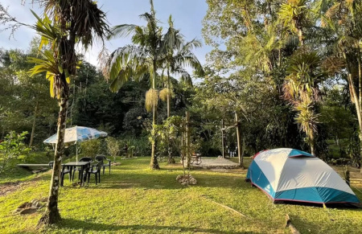
Dê um tempo do cotidiano de asfalto e cimento, venha nos visitar e conheça as maravilhas deste paraíso em meio a Mata Atlântica
Ambiente temático e aconchegante
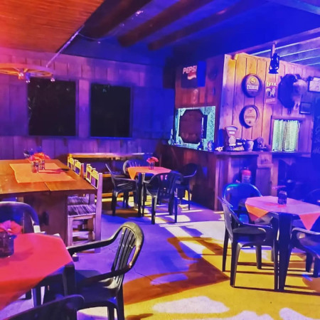
Experimente a famosa Cataia
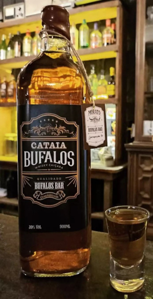
Aventura e diversão garantida
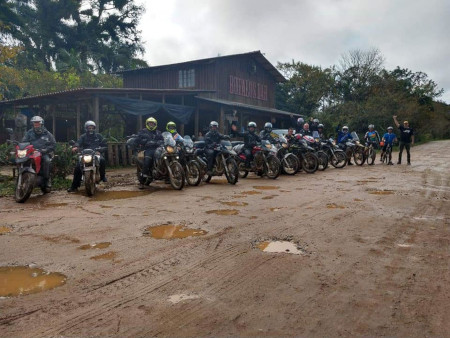
Cachoeira Salto Morato
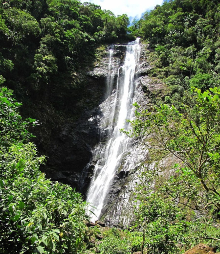
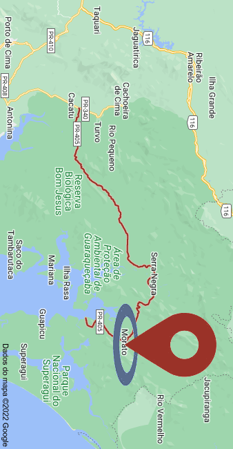
Localização
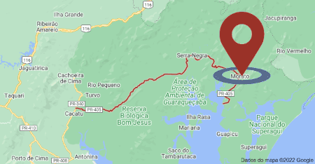
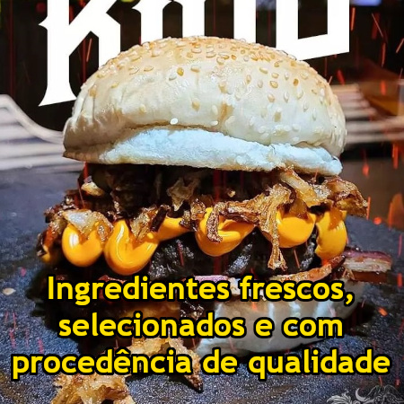
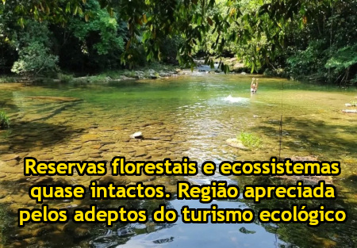
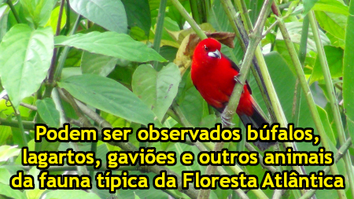
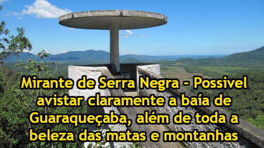
Amplo espaço para Camping
Dê um tempo do cotidiano de asfalto e cimento, venha nos visitar e conheça as maravilhas deste paraíso em meio a Mata Atlântica
Experimente a famosa Cataia
Ambiente temático e aconchegante
Aventura e diversão garantida
Cachoeira Salto Morato
Localização
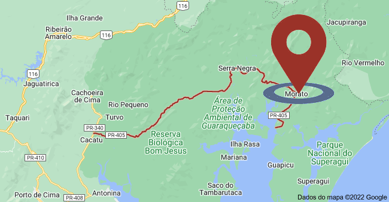Hambúgueres Gourmet
Ingredientes frescos, selecionados e com procedência de qualidade.
Cerveja Gelada

Refrescância e um belo pôr do sol.
Lugares Maravilhosos
Reservas florestais e ecossistemas quase intactos. Região apreciada pelos adeptos do turismo ecológico.
Fauna e Flora
Podem ser observados búfalos, lagartos, gaviões e outros animais da fauna típica da Floresta Atlântica.
Mirante
Mirante de Serra Negra - Possivel avistar claramente a baía de Guaraqueçaba, além de toda a beleza das matas e montanhas.
Guaraqueçaba
A cidade de Guaraqueçaba está situada numa região de rara beleza do litoral paranaense.